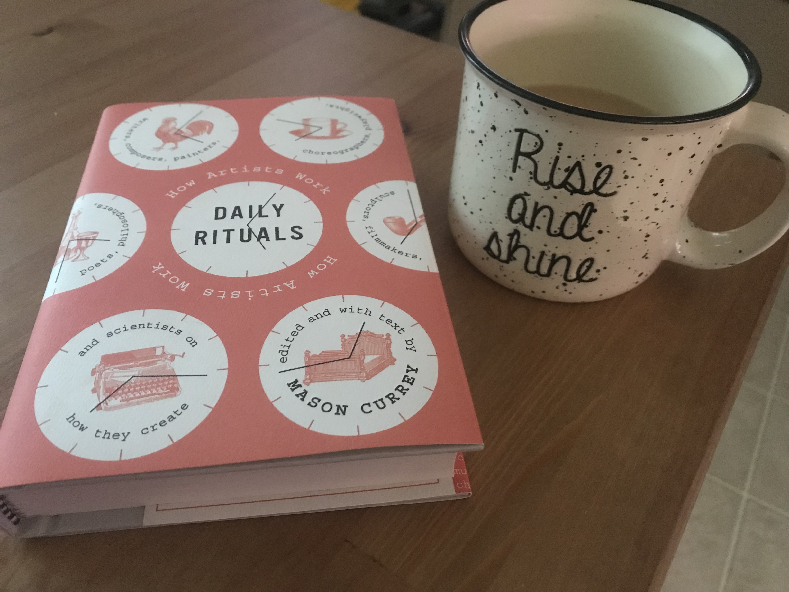

Hello, my name is Cristina (she/her) and I am currently a student at Epicodus! This is my first time wading through the sea of code and design. It is quite rewarding, challenging, and fun. I love seeing a webpage transform before my eyes!
Before starting my journey into programming, I attended PSU for my bachelor's degree in Art History. I have also been working in the Customer Service and Caregiving industry for over 10 years.
I joined Epicodus because I would like to change my career direction, and integrate my Art History knowledge and researching skills with technology. A couple ways I have begun the process of merging these two fields together is by creating speed painting videos and by managing and editing my mom's Etsy shop.
Current interests, hobbies, and skills.
